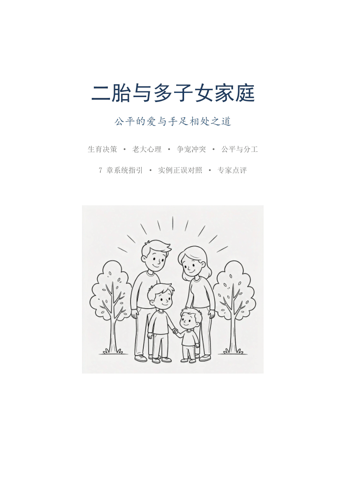
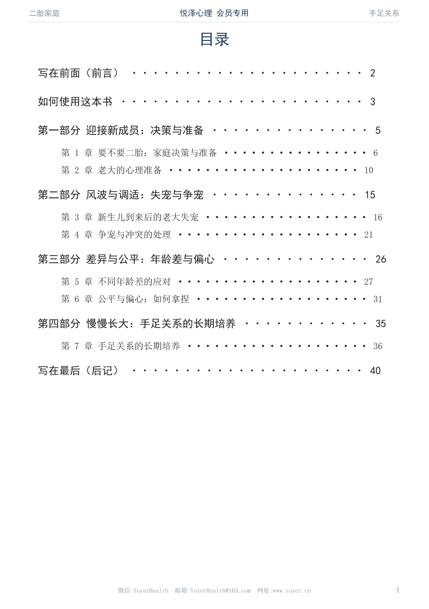
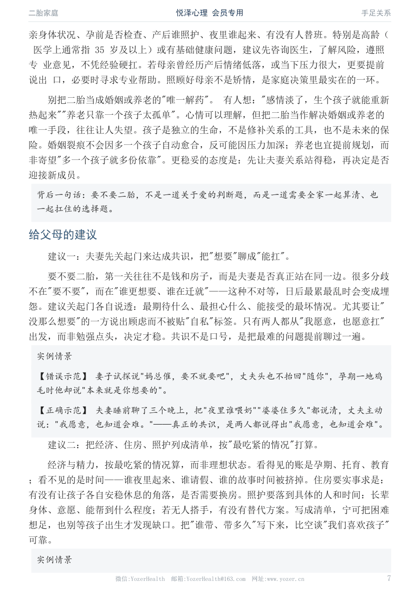
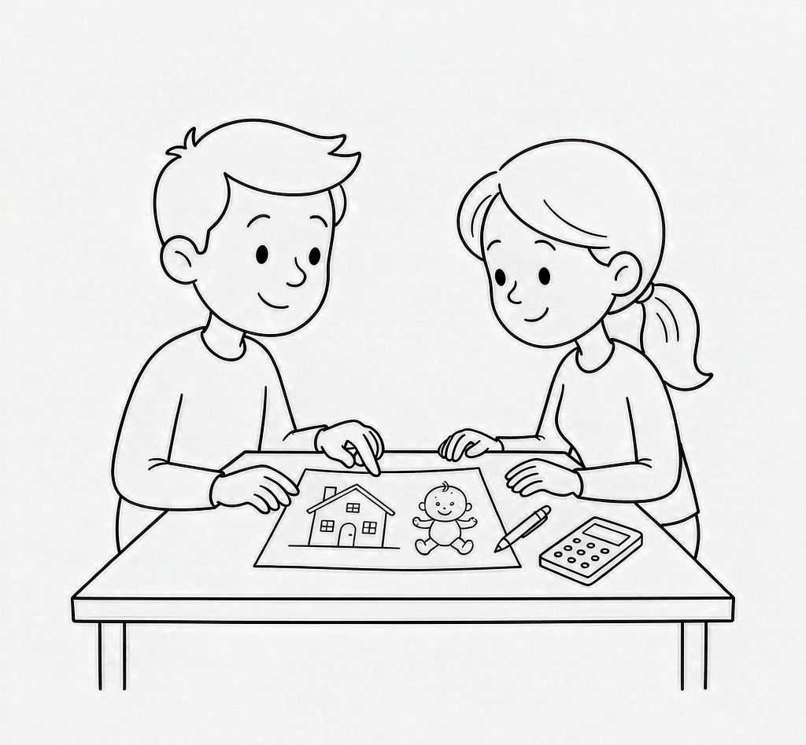

01
迎接新成员
2 章要不要二胎的家庭决策与准备、老大的心理准备——先在心里腾好位置。
——公平的爱与手足相处之道
"妈妈，你是不是只喜欢弟弟了？"从要不要二胎的家庭决策，到老大的心理准备、新生儿到来的失宠与争宠，再到年龄差、公平与偏心——这本书的核心只有一句：公平不是平均，每个孩子都需要独一无二的爱。

封面与内页样张来自电子书原稿
翻开这本书之前，先听听作者想说什么
"妈妈，你是不是只喜欢弟弟了？"
"你是哥哥，要让着妹妹！"
"你怎么这么不懂事，弟弟还小！"
家里添了老二，原本温馨的日子，常常一下子变得鸡飞狗跳：老大哭闹、黏人、退行（比如又尿床、又要奶瓶），老二被"护"得喘不过气，父母夹在中间，又累又愧疚。很多家长最初都会困惑：明明对两个孩子一样爱，为什么老大好像变"坏"了？为什么手足之间总也处不好？
请先放下这份自责。老大的"闹"，不是变坏了，而是在用他能做到的方式，确认一件最重要的事：我是否依然被爱？幼儿还难以理解"爱可以越来越多"，他们看到的是：妈妈的时间、怀抱、注意力，好像都被那个新来的小家伙分走了。对一个还不会表达"我有点不安"的孩子来说，哭闹、黏人、甚至退行，就是他说"我需要你"的语言。这并非能力倒退，而是情绪表达的一种方式。
这本书想帮多子女家庭的父母，解决三个最真实的难题。
第一，怎样让老大平稳接纳新成员。从"要不要生"的家庭决策，到怀孕期间的心理准备，再到新生儿到家后的头几个月——每一步该怎么做、怎么说，本书都会细细讲到。核心只有一句话：先安顿好老大的心，再谈道理；先给足爱，再谈公平。
第二，怎样处理没完没了的争宠和冲突。抢玩具、争拥抱、"你比我多"——这些几乎是多子女家庭的日常。本书不讲空泛的大道理，而是给出可以马上用的方法：不比较、不贴标签、先处理情绪再纠正行为、把冲突当成练习社交的机会。
第三，怎样把握"公平"这件最让人纠结的事。到底什么是对两个孩子都好？答案是：公平不等于平均。每个孩子的年龄、性格、需要都不同，真正让孩子安心的，不是"每样都一半"，而是"我有属于我的、不被分享的那一份爱"。
书中每一章，都配有生活场景、正误对照的实例、一张速查表，方便您在手忙脚乱时随时翻看。语言尽量体谅父母的两难——您不必做完美的家长，孩子需要的，从来不是面面俱到的父母，而是愿意看见他的父母。
愿每个孩子，都能在"我依然被深爱"的确认里长大；愿每个家庭，都在吵吵闹闹中，长出踏实而亲密的手足之情。
按“决策与准备—风波与调适—差异与公平—长期培养”四部分编排，顺着家庭变化的时间线走
要不要二胎的家庭决策与准备、老大的心理准备——先在心里腾好位置。
新生儿到来后的老大失宠、争宠与冲突的处理——先处理情绪，再处理行为。
不同年龄差的应对、公平与偏心如何拿捏——按需要提供，不公开比较。
手足关系的长期培养——把冲突当作练习社交的机会，不强迫“必须亲密”。
统一的章节结构，先理解孩子的情绪，再给出可以照着做的应对
场景化开场，让你觉得“这说的就是我家孩子”
讲清行为背后的心理与发育规律，不焦虑不指责
每条配一个实例情景，含错误示范与正确示范
点破常见误区，避免“越管越糟”
从专业角度收束，讲清原理与边界
7 章 · 附真实页码 · 点击上方按钮可快速跳转试读
以下为第 1 章完整节选，体验“场景 + 原因 + 建议 + 示范 + 点评”的编排
周末，两岁的二宝刚睡着，六岁的姐姐在画画。爸爸压低声音："要不……咱们再要一个？"妈妈看看账单，苦笑："我也想过，可你常加班到九十点，谁带？"爸爸说："妈不是可以来帮忙吗？"妈妈没接话——上次婆婆来住半个月，因为作息和喂养，两人冷战了好几回。
这样的对话正在无数家庭上演。有人真心喜欢孩子，想给老大留个伴；有人被长辈和同龄人"催"；也有人在婚姻疲惫时，把"再生一个"当成让日子重新有盼头的办法。理由各异，但最后都卡在同一个地方：我们真的准备好了吗？
如果你也在摇摆，请先别急着下结论：想要多个孩子是正常愿望，担心扛不住也是清醒的责任。要不要二胎，从来不是"爱不爱孩子"的判断题，而是全家一起算、一起商量的选择题。算清这道题，就是对现有孩子、对未来的孩子，也对你自己负责。
经济与精力：既算"看得见的账"，也算"看不见的账"。看得见的账容易算：孕期、分娩、吃穿用度、托育、日后教育。容易低估的是时间和人力——谁夜里喂奶、谁请假、谁的陪伴被挤占。很多家庭在"养一个也不算贵"里爽快点头，却在睡眠剥夺和分身乏术中措手不及。住房也要实事求是：孩子有没有各自安稳休息的角落，是否需要换房。摊开算不是功利，而是对孩子负责——稳定从容的环境，比昂贵用品更能滋养孩子。
母亲的身体与心理，是最该被认真对待的成本。怀孕、分娩、产后恢复，加上长期睡眠不足，都是实实在在的负担；老大尚小，消耗成倍叠加。准备前夫妻应谈清：母亲身体状况、孕前是否检查、产后谁照护、夜里谁起来、有没有人替班。特别是高龄（医学上通常指 35 岁及以上）或有基础健康问题，建议先咨询医生，了解风险，遵照专业意见，不凭经验硬扛。若母亲曾经历产后情绪低落，或当下压力很大，更要提前说出口，必要时寻求专业帮助。照顾好母亲不是矫情，是家庭决策里最实在的一环。
别把二胎当成婚姻或养老的"唯一解药"。有人想："感情淡了，生个孩子就能重新热起来""养老只靠一个孩子太孤单"。心情可以理解，但把二胎当作解决婚姻或养老的唯一手段，往往让人失望。孩子是独立的生命，不是修补关系的工具，也不是未来的保险。婚姻裂痕不会因多一个孩子自动愈合，反可能因压力加深；养老也宜提前规划，而非寄望"多一个孩子就多份依靠"。更稳妥的态度是：先让夫妻关系站得稳，再决定是否迎接新成员。
建议一：夫妻先关起门来达成共识，把"想要"聊成"能扛"。
要不要二胎，第一关往往不是钱和房子，而是夫妻是否真正站在同一边。很多分歧不在"要不要"，而在"谁更想要、谁在迁就"——这种不对等，日后最累最乱时会变成埋怨。建议关起门各自说透：最期待什么、最担心什么、能接受的最坏情况。尤其要让"没那么想要"的一方说出顾虑而不被贴"自私"标签。只有两人都从"我愿意，也愿意扛"出发，而非勉强点头，决定才稳。共识不是口号，是把最难的问题提前聊过一遍。
建议二：把经济、住房、照护列成清单，按"最吃紧的情况"打算。
经济与精力，按最吃紧的情况算，而非理想状态。看得见的账是孕期、托育、教育；看不见的是时间——谁夜里起来、谁请假、谁的故事时间被挤掉。住房要实事求是：有没有让孩子各自安稳休息的角落，是否需要换房。照护要落到具体的人和时间：长辈身体、意愿、能帮到什么程度；若无人搭手，有没有替代方案。写成清单，宁可把困难想足，也别等孩子出生才发现缺口。把"谁带、带多久"写下来，比空谈"我们喜欢孩子"可靠。
建议三：母亲的身体与心理准备要认真对待，高龄先咨询医生。
生育对母亲身心的消耗常被低估。准备前夫妻应坦诚谈：母亲身体状况、孕前是否检查、产后谁照护、夜里谁起来、有没有人替班。高龄或有基础健康问题，建议先咨询医生，遵照专业意见，不凭经验硬扛。心理层面同样不能回避：若母亲曾经历产后情绪低落，或当下压力很大，更要提前说出口，必要时寻求专业帮助。把母亲身心放在决策中心，不是自私，而是对整个家庭负责。
建议四：把老大的年龄差与家族支持系统算进去，别"生了再说"。
两个孩子的年龄差，会影响照护强度和手足互动：间隔小，前期压力集中；间隔大，老大理解力更强，但别让他过早当"小大人"。这没有标准答案，关键是你们家能否应对。家族支持也要具体：祖辈愿意帮到什么程度、住多远、育儿观念是否好协调；若支持不足，夫妻能否靠自己或托育撑过去。决定前想清楚，比"生了再说"稳妥。二胎不是给某个人的礼物，而是全家共同参与的长期项目。
把"生二胎"当婚姻解药：裂痕不会因多一个孩子自动愈合，先把夫妻关系经营稳。
当作养老的唯一手段：孩子不是保险，养老宜提前规划，别把期待全压在孩子身上。
"多双筷子"式的轻估：低估时间精力成本最易措手不及，要按最吃紧的情况算。
高龄不咨询医生：35 岁及以上或有健康问题，先听专业意见，不凭经验硬扛。
默认祖辈一定会帮忙：身体、意愿、观念都要亲自问清，别把"想当然"当"有把握"。
要不要二胎，表面是"生不生"的取舍，本质是家庭在问：有没有能力再多给一个孩子安稳从容的成长环境。没有标准答案，也没有"应该"——想多个孩子是温柔的愿望，犹豫再三同样是认真对待生命。真正该在意的是几个能否落地的答案：夫妻是否同心，账是否算清，母亲的身体与情绪是否被看见，照护是否有人兜底。高龄生育请在医生指导下决定；若母亲过往有产后情绪困扰，建议提前寻求专业支持。
一句宽心话：不完美准备也可以开始，但毫无准备容易被动。把能想到的都聊过一遍，就已胜过临时起意。公平的爱从不是把资源平均切给两个孩子——每个孩子都需要独一无二、被看见的爱。无论最后怎么决定，都是你们家当下最合适的答案。慢慢来，比赶着来更稳。
—— 以上为节选，完整内容见电子书 ——
真实排版预览 · A5 竖版 · 黑白简笔画插图



图片为文档内嵌样张，仅作版式展示
| 项目 | 说明 |
|---|---|
| 书名 | 二胎与多子女家庭 |
| 副标题 | 公平的爱与手足相处之道 |
| 读者对象 | 二胎与多子女家庭父母 |
| 篇幅 | 7 章 · 约 2.8 万字 · 40 页 |
| 版本 | A5 版（148×210mm） |
| 格式 | PDF 电子书 |
| 插图 | 8 张黑白简笔画题图 |
| 结构 | 四部分 · 每章五步 · 实例正误对照 |